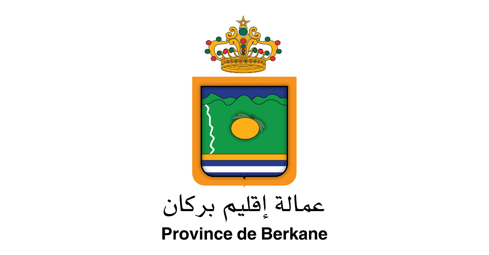

La demande se fait auprès de la Province.
Préparer les documents originaux ou les copies légalisées selon votre procédure.
Vérifiez les informations, la lisibilité, les signatures et les cachets avant le dépôt.

Province de BerkaneLa demande se fait auprès de la Province.
Préparer les documents originaux ou les copies légalisées selon votre procédure.
Vérifiez les informations, la lisibilité, les signatures et les cachets avant le dépôt.